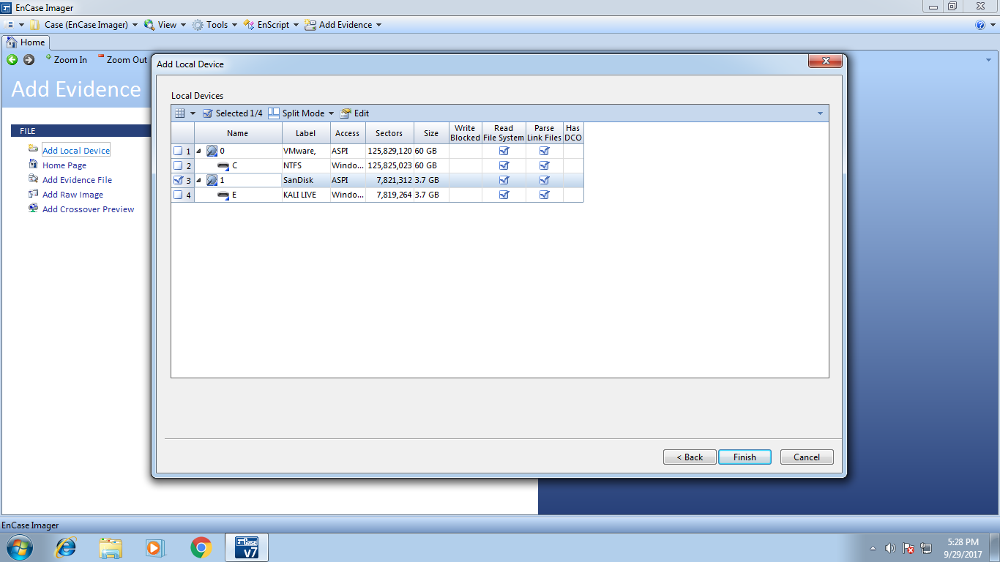

Encase Imager
Es una herramienta utilizada en el campo de la informática forense para la adquisición y creación de imágenes forenses de dispositivos de almacenamiento. Fue desarrollado por Guidance Software, ahora adquirido por OpenText, y es parte de la suite de software EnCase Forensic.
EnCase Imager permite realizar copias forenses un poco de discos duros, dispositivos USB, tarjetas de memoria y otros medios de almacenamiento. Su objetivo es preservar la integridad de los datos durante la adquisición, garantizando que no se realicen modificaciones en los datos originales.
Algunas de las características y funcionalidades de EnCase Imager incluyen:
1. Adquisición de imágenes forenses: Permite crear copias forenses de dispositivos de almacenamiento completos o segmentados, incluyendo particiones específicas o archivos seleccionados.
2. Verificación de integridad: Verifica la integridad de la imagen obtenida mediante la generación de hash y la comparación con el hash original del dispositivo.
3. Soporte de diferentes formatos de imagen: Puede crear imágenes en formatos estándar como EnCase Evidence File (E01), Raw (DD), y Advanced Forensic Format (AFF), lo que permite una fácil compatibilidad y análisis con otras herramientas forenses.
-

-

-